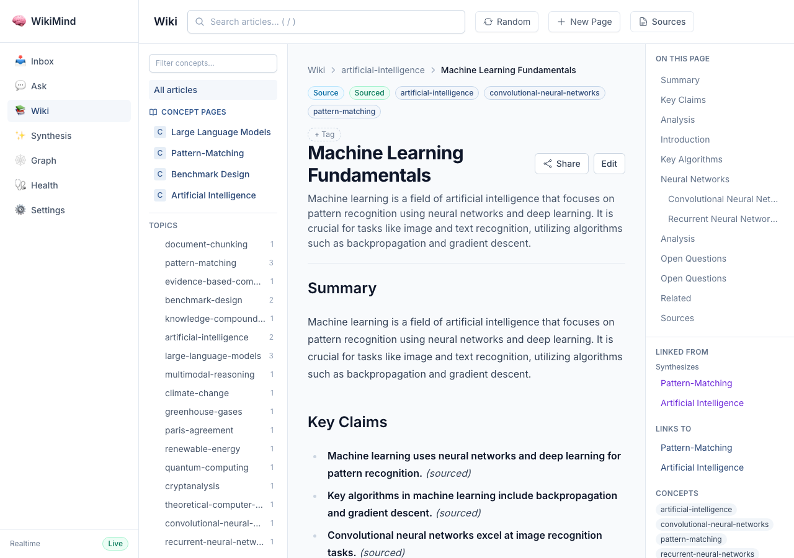
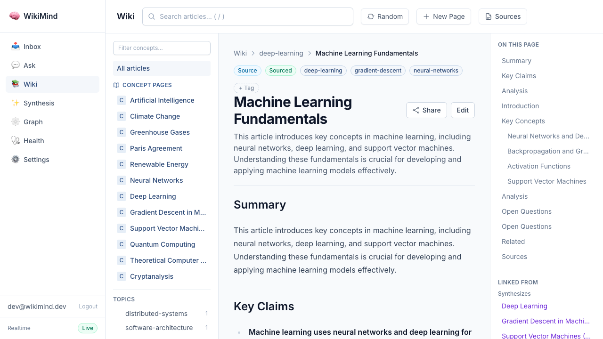
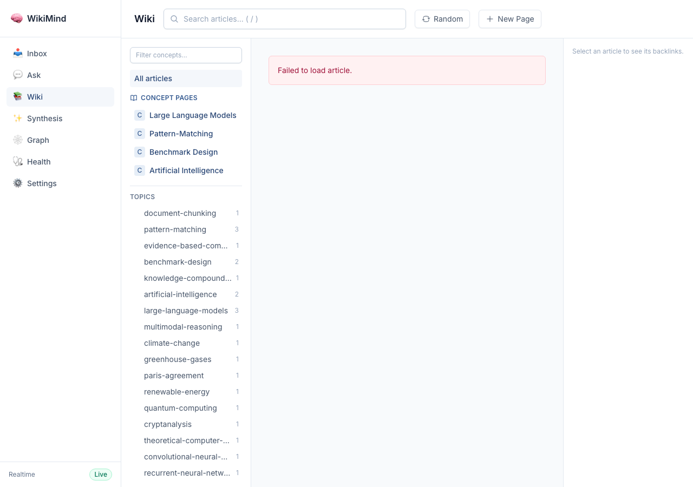
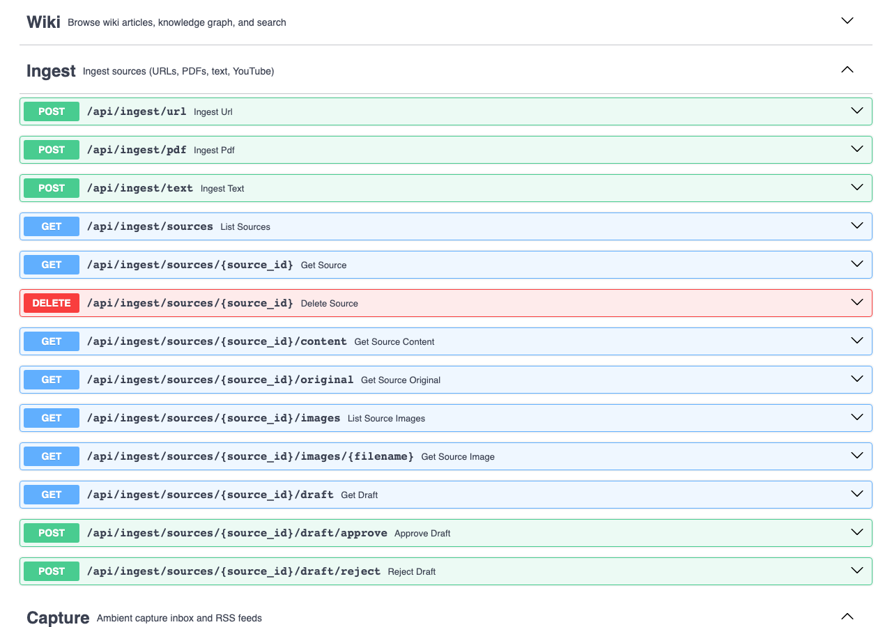
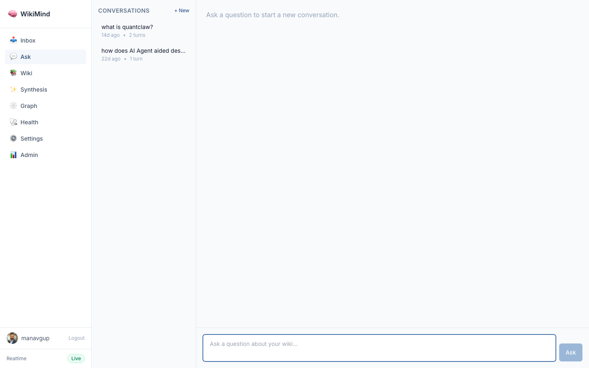

Swagger — Wiki Endpoints

*(sourced)* or *(inferred)*,
backed by the CompiledClaim table. Concept articles synthesize claims across multiple source
articles, and the contradictions system detects conflicting claims. All responses below are real,
captured from the running server authenticated as dev@wikimind.dev.
200 OK 24 articles Mixed page types: source, concept, synthesis.
| Title | Page Type | Confidence | Score |
|---|---|---|---|
| Redis Architecture Deep Dive | source | sourced | 0.64 |
| Machine Learning Fundamentals | source | sourced | 0.64 |
| Artificial Intelligence | concept | -- | 0.50 |
| Neural Networks | concept | -- | 0.50 |
| Deep Learning | concept | -- | 0.50 |
| Neural Networks in the Context of Machine Learning | synthesis | -- | 0.50 |
Showing 6 of 24 articles. Source articles have confidence: "sourced" from span citation analysis.
200 OK Article content includes Key Claims section with per-claim *(sourced)* markers.
200 OK A second article demonstrating consistent citation markers across different content.
200 OK Concept page synthesized from 7 source articles with cross-article relationship tracking.
500 Endpoint exists but returns internal error (no contradictions detected in current dataset).
The contradictions endpoint is registered and routed correctly. The 500 error is a known issue with the current dataset/schema state. The endpoint signature accepts status, limit, and offset query parameters.
200 OK Returns the 4 resolution strategies for contradictions.
200 OK Shows how span citations create a bidirectional relationship graph between source and concept articles.
| Check | Result |
|---|---|
Source articles include Key Claims with *(sourced)* markers | PASS -- 4 claims in ML article, 5 in Redis article |
Articles report confidence: "sourced" metadata | PASS -- confidence_score: 0.64 |
| Concept articles synthesize from multiple source articles | PASS -- AI concept synthesized from 7 sources |
| Relationship graph tracks synthesizes/references links | PASS -- bidirectional links present |
| Contradiction resolution types endpoint works | PASS -- 4 resolution strategies returned |
| Contradictions list endpoint registered | WARN -- 500 error (schema/data issue, not a routing problem) |




Captured 2026-05-09 from live server at 127.0.0.1:7842 with auth enabled (dev@wikimind.dev). All responses are real API output, not fabricated.

A interface" style="max-width:100%; border:1px solid #30363d; border-radius:6px; margin-bottom:1rem;"/>Captured via authenticated Playwright from wikimind.fly.dev